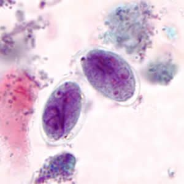
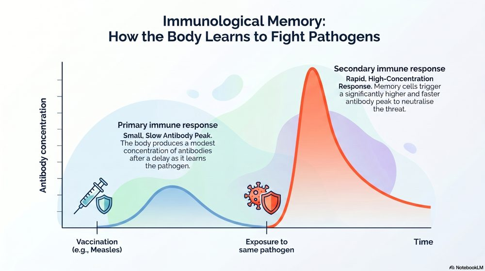

Section A: Multiple choice (10 marks)
Which of the following describes a pathogen?
A scientist identifies a pathogen that is multicellular and eukaryotic and reproduces by spores. This pathogen is a:
A person touches a contaminated surface, then touches their face, and becomes ill. This is:
If a disease is "endemic" to a region, it means the disease:
Why are antivirals harder to develop than antibiotics?
If the threshold for herd immunity for a disease is 95%, what happens if vaccination rates drop to 80%?
Why is antiseptic usually applied to a cut on the skin, while disinfectant is used to clean a laboratory bench?

The diagram shows the process of phagocytosis. What is happening at position 3?
Which of the following is a chemical barrier in the first line of defence?
A mother who is recovering from COVID-19 is breastfeeding her newborn baby. The baby receives protection from the COVID virus. This is an example of
Section B: Short answer (27 marks)
What is the difference between a non-infectious disease and an infectious disease?
Infectious diseases are caused by pathogens and can be passed between organisms, whereas non-infectious diseases are not caused by pathogens and cannot be passed on.
Name and describe three different types of pathogenic agents.
Any three (1 mark each), for example:
- Bacteria: prokaryotic organisms that can be treated with antibiotics.
- Fungi: multicellular (or unicellular), eukaryotic organisms that produce spores.
- Protozoa: single-celled eukaryotic organisms.
- Viruses: non-living agents that reproduce inside host cells.
- Parasites: organisms that live in or on another organism (their host) and benefit by taking nutrients at the host's expense.
- Prions: abnormal proteins that trigger normal proteins in the brain to fold abnormally.
Question 3 (4 marks)
A hospital discovers a strain of bacteria that is resistant to multiple antibiotics.
Explain why a doctor would not prescribe an antibiotic for a patient with a viral infection.
Antibiotics are designed to target bacteria (structures such as their cell walls) (1 mark). Viruses have different structures and "hide" inside the body's own cells, so antibiotics cannot reach or affect them without harming the host (1 mark).
Explain how these bacteria became resistant to multiple antibiotics.
Misuse of antibiotics, such as not finishing the course or taking antibiotics for viral infections, kills the susceptible bacteria but lets any resistant bacteria (which have resistance through random mutations) survive (1 mark).
The resistant bacteria reproduce and pass on their resistance; over time, this natural selection produces bacteria resistant to a number of antibiotics (1 mark).
When the skin is cut, the area often becomes red, warm and swollen. Describe the process of inflammation and why it occurs.
Inflammation occurs to protect the body when the skin is cut. Damaged cells release histamine (1 mark), which increases blood flow to the site, bringing white blood cells to fight any infection; this makes the area red, warm and swollen (1 mark).
Question 5 (9 marks)
Case study: giardiasis
Giardiasis is an infection of the digestive system caused by a microscopic parasite called Giardia duodenalis. This single-celled eukaryotic organism is often found in contaminated water. Once ingested, it attaches to the lining of the small intestine, causing symptoms such as diarrhoea and stomach cramps.

Using information from the case study, what type of pathogen causes giardiasis? Use evidence to support your answer.
A protozoan (a microscopic parasite): it is a single-celled eukaryotic organism.
Outline two strategies that could be used to prevent the spread of this parasite in the community.
- Boil or filter possibly contaminated water before drinking it (1 mark).
- Improve community sanitation and hand hygiene to prevent faecal–oral transmission (1 mark).
Would antibiotics be an effective treatment for giardiasis? Explain your answer.
No (1 mark). Antibiotics only affect prokaryotic cells (bacteria), but giardiasis is caused by a protozoan parasite, which is a eukaryotic cell (1 mark).
Explain the roles of B cells and T cells in the third line of defence when fighting an internal parasite such as a tapeworm.
- B cells and T cells are part of the specific immune response in the third line of defence (1 mark).
- B cells recognise antigens from the parasite and produce specific antibodies that bind to it, helping to neutralise it and mark it for destruction (1 mark).
- Helper T cells activate B cells and coordinate the immune response by releasing signalling chemicals; cytotoxic T cells destroy infected host cells that display the parasite's antigens (1 mark).
- Together, these responses help eliminate the infection, and memory cells form for a faster response to future infections (1 mark).
People with HIV usually don't die from the virus itself; those with AIDS have a weakened adaptive immune response (third line of defence). Explain why this is a disadvantage and how it can affect people.
A weakened third line of defence means the body can't produce a specific immune response (1 mark). This makes the person highly susceptible to infections that a healthy immune system would normally defeat easily (1 mark).
Question 7 (6 marks)
Measles is a highly contagious viral disease that can lead to serious health complications. Before the measles vaccine, major outbreaks happened every few years. Today, public health programs rely on widespread vaccination to maintain immunity in the population and prevent the spread of the virus to people who cannot be vaccinated, such as infants or people with weakened immune systems.
The measles vaccine uses a "live attenuated measles virus". What does this mean? What type of immunity is this an example of?
A live attenuated virus is alive but weakened, so it can't cause disease but can still stimulate an immune response (1 mark).
This is artificial active immunity: the body is exposed to the antigen through vaccination and makes its own antibodies and memory cells (1 mark).
The graph below shows a person's antibody concentration after their measles (MMR) vaccination and a later exposure to the measles virus.

Using the graph, explain how the immune response to the vaccination differs from the secondary immune response when the person is actually exposed to the measles virus.
- Primary response (after vaccination): a small, slow antibody peak, as the immune system meets the antigen for the first time (1 mark).
- Secondary response (after exposure): a rapid, much higher concentration of antibodies, triggered by memory cells, which neutralise the threat quickly (1 mark).
Once the measles virus enters the body and infects host cells, the third line of defence becomes critical. Explain how cytotoxic T cells identify and destroy host cells infected by the measles virus.
Cytotoxic T cells recognise specific viral antigens displayed on the surface of infected host cells (1 mark). They bind to these cells and release chemicals (enzymes such as perforin) that destroy them, stopping the virus from replicating further (1 mark).